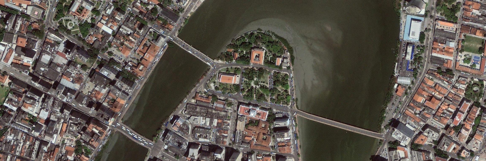
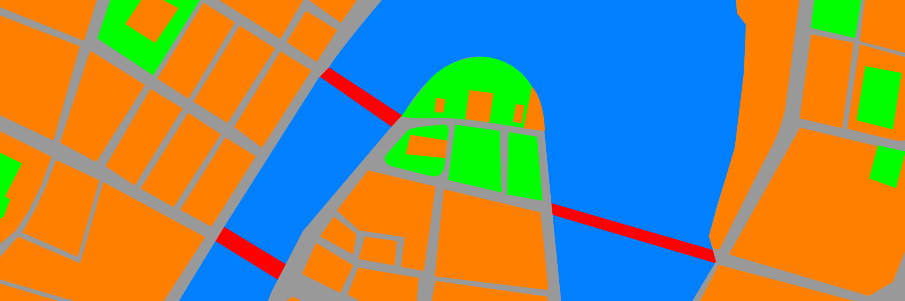
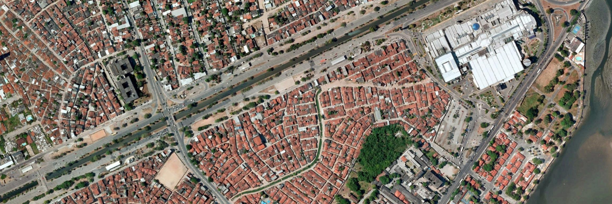
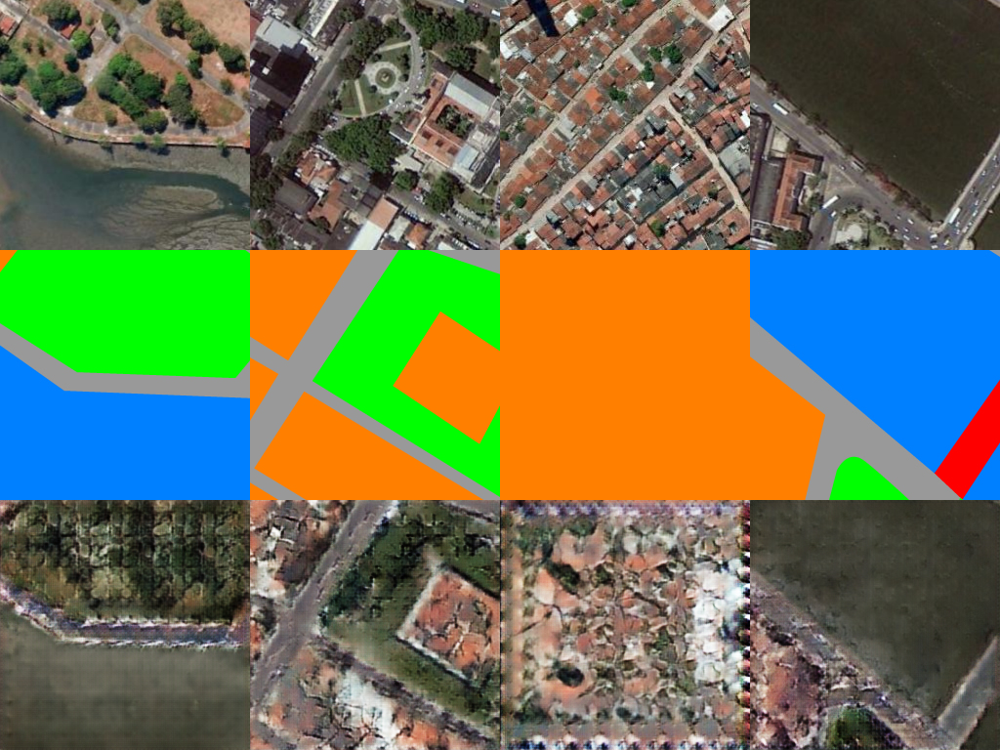
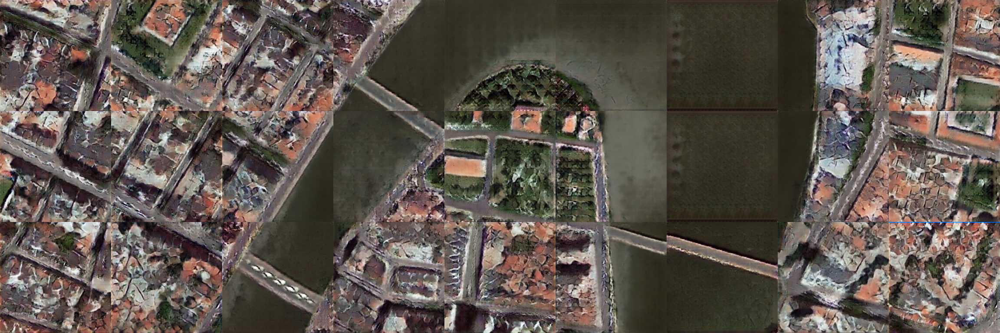
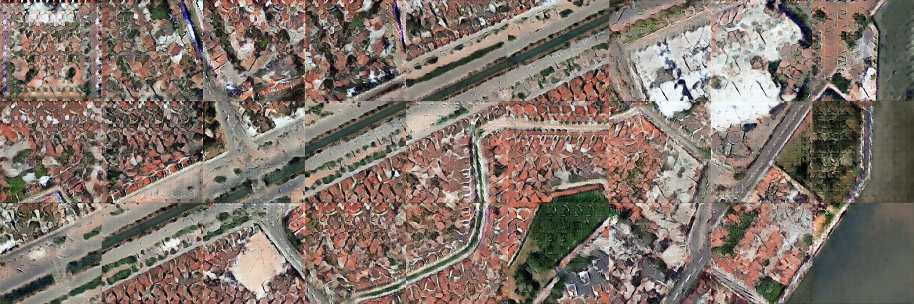
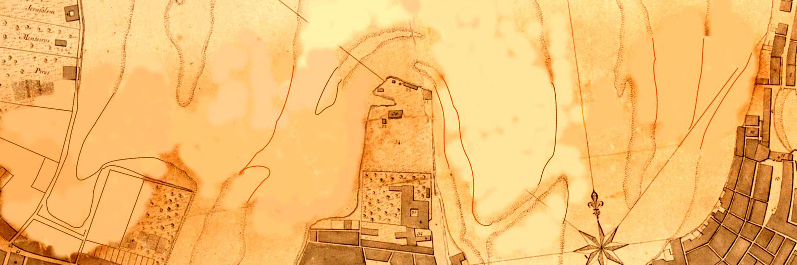
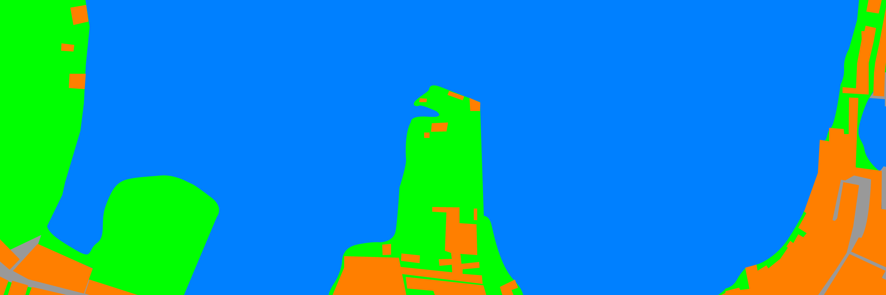
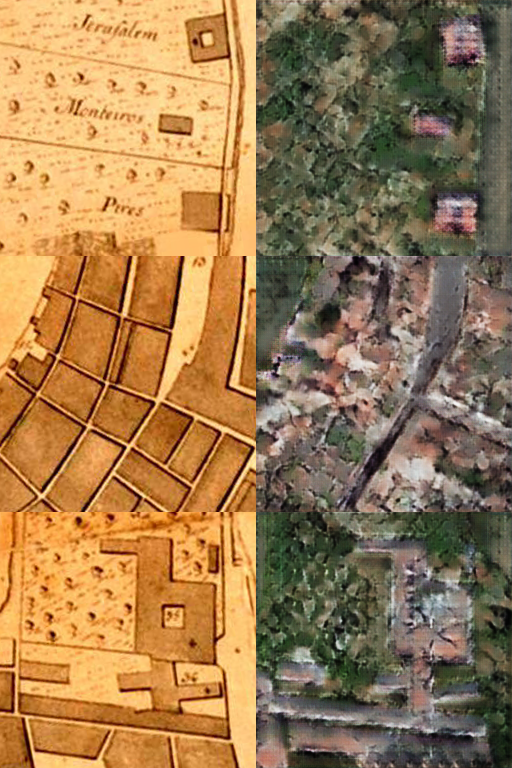
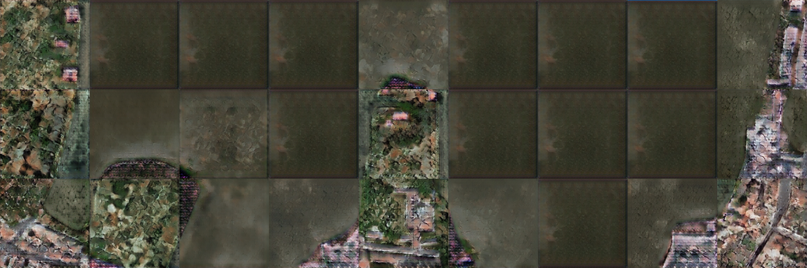

💻 Experimentos com cGAN
Essa semana, testei a sugestão do meu professor, traduzir imagens do Recife de 2010 a 2015 usando o algoritmo pix2pix. Na hora de organizar os arquivos para treino e teste, acabei invertendo os conjuntos de imagem e testei a rede para traduzir 2015 em 2010. A implementação do algoritmo é essa disponível aqui. Para esse treinamento, 150 iterações foram executadas. Seguem os resultados:

As colunas da esquerda para a direita: imagem em 2010, imagem em 2015 e a previsão da rede.
Depois de analisar os resultados da tradução de imagem para imagem, percebi que a arquitetura da rede não é exatamente ideal para reproduzir a estrutura de uma imagem é outra. A arquitetura consegue copiar o estilo e iluminação bem de uma imagem para outra, a rede também manipula texturas bem. Já a reprodução de disposição de elementos, eliminação ou adição, quando a alimentamos com imagens no mesmo domínio do resultado esperado, torna-se difícil.
Os exemplos do artigo são claros: ou reproduzem mudanças de textura e forma, ou traduzem rótulos. Observando isso e a necessidade de haver uma tradução que não dependa de um tempo histórico, também considerando que não haverá fotografias de satélite para todas as épocas, mas outras fontes de informação, precisei reavaliar a abstração "mapa". Tentei pensar um denominador comum a todos os mapas, uma representação única, a-histórica, que seja também mais fácil de ser traduzível entre si. Seguindo o trabalho histórico-urbanístico de José Luiz Mota Menezes e a maioria dos exemplos do projeto pix2pix, resolvi representar os mapas e fotografias de satélite através de um mapa de rótulos.
Meu primeiro experimento foi rotular duas fotografias de satélite, quebrar em pedaços e separar em grupos de treino e teste. As fotografias haviam sido utilizadas na tradução 2015-2010, então só precisei rotular e organizar as entradas. Seguem os mapas:
Bairros da Boa Vista, Santo Antônio, São José e do Recife (2010)
Seu mapa de rótulos
Corte da Avenida Agamenon Magalhães (2010)

Seu mapa de rótulos
As cores indicam construção humana (laranja), parques ou áreas verdes (verde), corpos de água (azul), corredores viários (cinza) e pontes (vermelho). Os resultados foram visualmente melhores do que a tradução temporal:
A primeira linha de imagens mostra os recortes originais; a segunda linha mostra os rótulos dados como entrada da rede; e na terceira, a previsão.
Depois do modelo treinado, reconstrui as duas imagens usadas como um grande quebra-cabeça:
Bairros da Boa Vista, Santo Antônio, São José e do Recife (reconstruído pela rede)
Corte da Avenida Agamenon Magalhães (reconstruído pela rede)
Porque eu não tive o cuidado de rotular as casas como entes individuais, mas sim uma "massa" amontoada de construções, sem respeitar rigorosamente a divisão de blocos em todas as duas imagens, sem considerar os diferentes tipos de ocupações e suas densidades, eu diria que a reprodução das construções no resultado final foi o mais pobre dos rótulos. Ao contrário, os rótulos utilizados na demarcação de parques e áreas verdes foram as que melhor tiveram desempenho em reproduzir até padrões exclusivos. O rótulo para pontes, diria que o de mais detalhe, também destacou-se na reprodução dos padrões visuais de sua categoria.
Percebendo que a partir de um mapa de rótulo era possível reconstruir uma visualização de satélite com características interessantes, resgatei o mapa do Recife do ano de 1808, como visto no recorte abaixo:
Recorte do Porto do Plano e Praça de Pernambuco, por Jozé Fernandes Portugal (1808)
Escolhi esse recorte por ser uma época da história onde uma configuração urbana próxima a noção contemporânea já era presente e pelas nuances da região, presença dos rótulos utilizados no treinamento anterior. Como entrada dessa rede, utilizei todos os mapas de rótulo da tentativa anterior, ou seja, os dois mapas de 2010 e recortei o mapa de rótulos de 1808, como visto abaixo:
Mapa de rótulos do Recife 1808
O treinamento levou 300 iterações e apresentou resultados satisfatórios diante da qualidade de rótulos fornecidos:
A primeira coluna mostra alguns recortes do mapa e a segunda coluna o trabalho da rede
A seguir é possível ver todas as imagens montando o panorama final:
Recorte do Porto do Plano e Praça de Pernambuco, por Jozé Fernandes Portugal (reconstruído pela rede)
Como apontado, a qualidade dos rótulos e as texturas utilizadas no treinamento significam bastante para o resultado da rede. Para os próximos passos, pretendo testar melhores rótulos e texturas, bem como outras arquiteturas e testes em tradução entre mapas de rótulo.